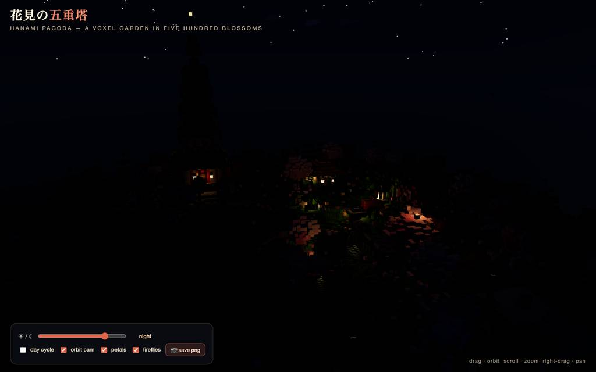
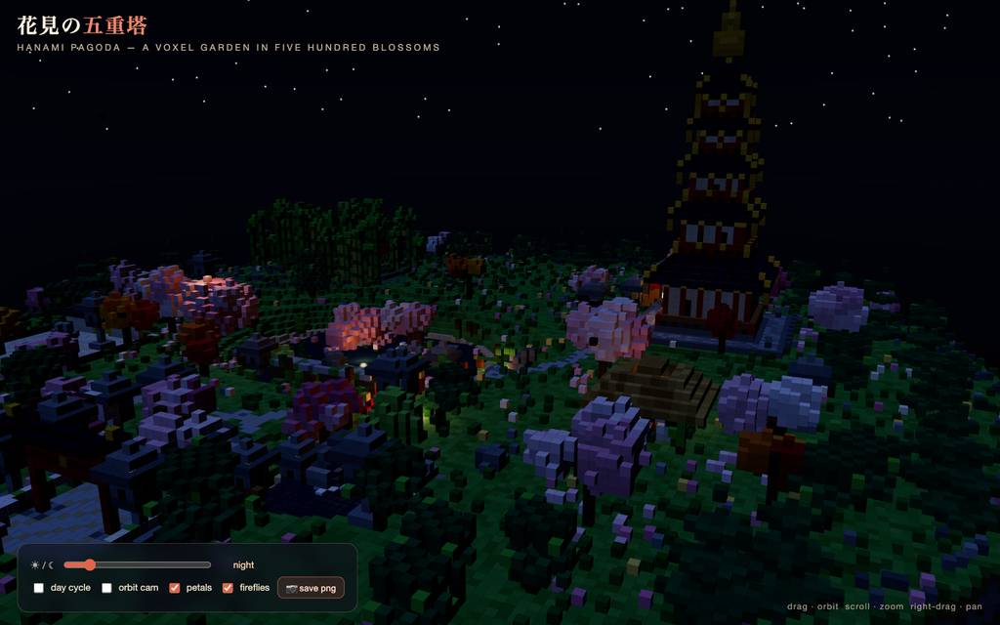
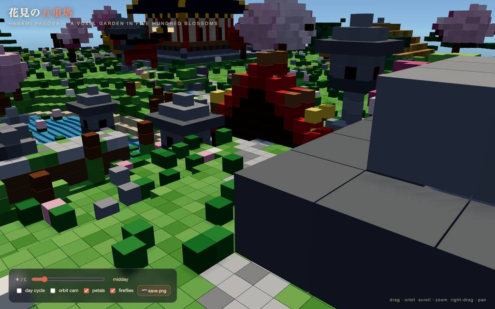
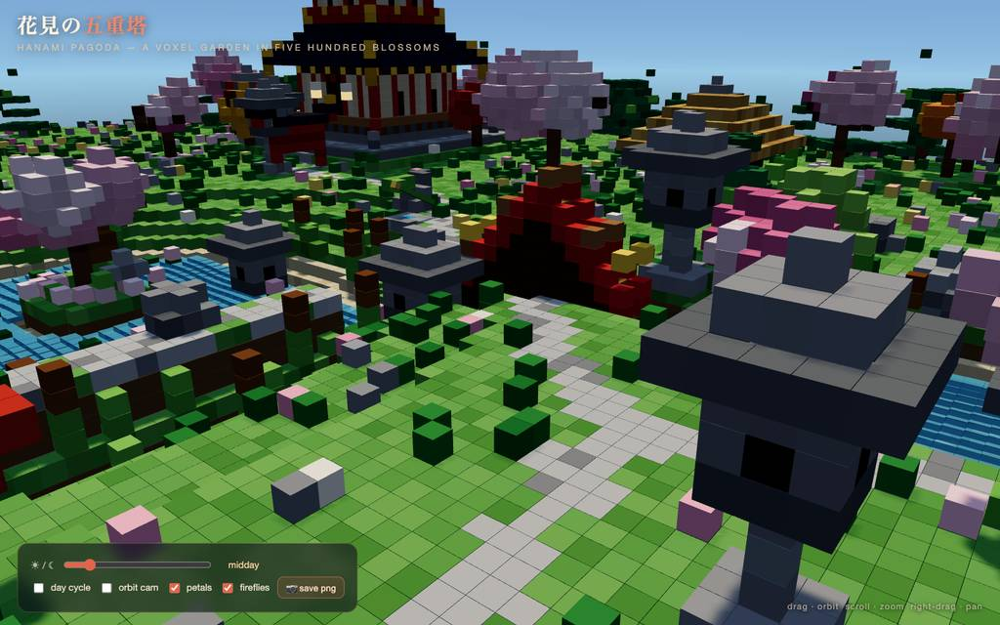
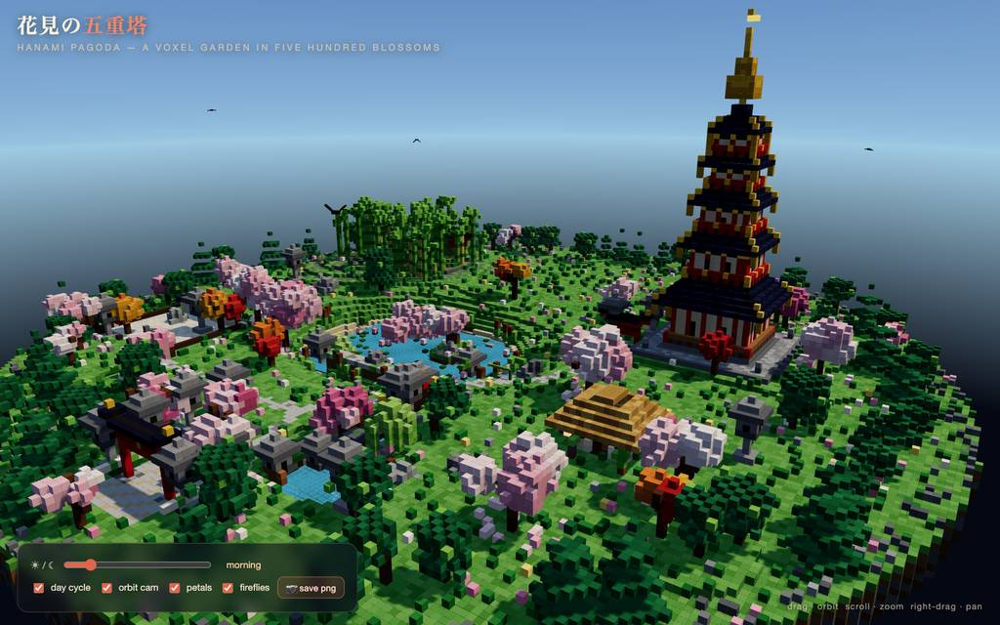
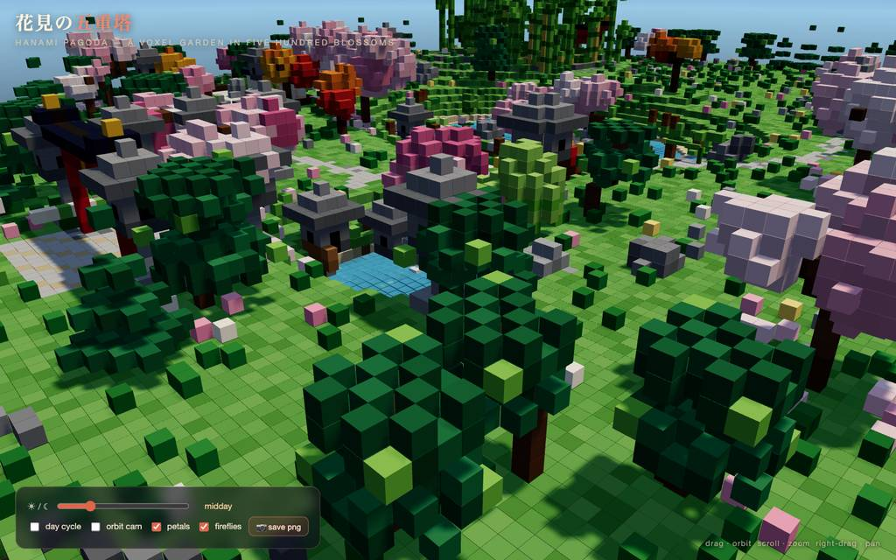

runs / 2026-10-19 / 105834-088000-baseline-f0749a02
五重塔のボクセル庭園を単一HTMLで約54分で完成
qwen3.8-flash-next-unsloth-ud-q4_k_xl（thinking: high）が、voxel の五重塔庭園シーンを単一HTMLにするタスクを主呼び出し88件・3252.8秒で完走した（exit 0）。#3〜#4の巨大書き出しが出力上限に当たり#5〜#10でチャンク分割→連結に切り替え、その後は描画検証とedit修正を繰り返した。最終成果物は pagoda-garden.html 52,316バイト。
成果物
work/pagoda-garden.html（52,316 バイト）をそのまま同梱している。重いシーンもあるため、必要なときだけ起動する。
pagoda-garden.html
51 KB · 起動するまで読み込まない












全 14 枚から等間隔に 12 枚を選んでいる。logs/events.jsonl の画像ブロックを内容ハッシュで重複排除して時系列に並べた、制作中の検証用スクリーンショット。最終版とは限らない。
成果物の構成
| 要素 | 内容 |
|---|---|
| 成果物形式 | 単一 HTML（pagoda-garden.html 52KB）。three.js は unpkg へストリーム読みするため初回のみネットワーク必須と報告。 |
| レンダリング基盤 | 約7万ボクセルをベイクし、静的ジオメトリは5ドローコール。隠面カリングとインスタンス色にベイクしたボクセル単位のAOを採用。 |
| 五重塔 | 穴あき階層壁・朱の柱・金梁冠・格子窓・懸垂灯籠、反り屋根に金鍍金尖端と鈴、各層の手すり、九輪のsōrinと光る宝珠、石壇と大階段が基部。 |
| 水景 | 島（灯籠＋木）と蓮葉のある桜池を飛び石が渡り、掘割に太鼓橋、岩塔の滝が鯉池に落ちる。島岩裏には夜光する水晶脈。 |
| 庭の構造物 | 熊手の岩庭＋月門のある塀、茅葺茶室（甲板・火鉢・座布団）、実際に作動する鹿威し、大鳥居（樫木・額束・しめ縄）と小門2基、石灯籠20基以上。 |
| 樹木と生命 | 桜3色・庭松・紅葉・枝垂柳・針葉樹帯・竹藪。鯉7匹が池を巡回し、花弁1000枚、夜間ホタル110＋星空、羽ばたく鳥、流れる雲を配置。 |
| システムとUI | 鍵付き日周（夜明け→夜）が空シェーダ・霧・日月・露光・水色・灯籠発光を駆動。時間スクラバー、トグル4個、PNG書き出しUIを備える。 |
| 検証結果 | software WebGL で77〜83FPS、クリーンロードでコンソールエラーゼロ、サイクル進行とトグル・スクショボタンを実操作確認。朝・夕・夜と主要被写体の接写をフレーム毎に点検。 |
モデルの最終メッセージから読み取った内容。コードの確認はしていない。
タイムライン
88 回の API 呼び出しを時間順に並べた。上段の帯の幅が各呼び出しの所要時間で、帯の間の空白がツールの実行時間。下段はその時点のコンテキスト長。
最も長い 2 回の生成（#4 593 秒・#3 405 秒）で 998.2 秒、壁時計の 30.7%。出力トークンの上位 4 回（#4・#3・#2・#1）で全体の 53.9%（87,034 / 161,492）。推論以外（ツール実行など）は約 63 秒（2%）。
フェーズ別の内訳
| フェーズ | 経過 | 所要 | 全体に占める割合 | 呼び出し | 出力 tok | 何をしたか |
|---|---|---|---|---|---|---|
| 環境確認 | 0:00–9:48 | 588 秒 | 18.1% | 2 | 29,649 | node・CDN到達性・ワークスペースを確認し、ブラウザ自動操作のドキュメントを読んだ後、todo で構築計画を立てた。 |
| 本体コード執筆 | 9:48–34:43 | 1494 秒 | 46.0% | 10 | 85,875 | #3・#4で巨大書き出しを試みるが#4は32768トークンで上限到達（E1）。#5〜#10でチャンク6分割に切り替え、bash で連結して node --check を通し、HTTP サーバを起動した。 |
| 描画と詰めの調査 | 34:43–36:41 | 118 秒 | 3.6% | 17 | 5,093 | headless Chromium でページを開き DOM・エラー確認。#16 のスクショ失敗後、カーネル ping・reset・プロセス確認・Python ブリッジ経由で描画復帰を詰めた。 |
| 宣言欠落の修正 | 36:41–39:31 | 170 秒 | 5.2% | 18 | 7,134 | build orchestrator 欠落と shishiPos・HERO_TREES の宣言位置を edit で修正し、Syntax チェック→リロードで描画を回復。夜・夕方の表示も確認した。 |
| 水面・夜景の磨き込み | 39:31–48:51 | 560 秒 | 17.2% | 24 | 23,519 | 水位上昇、月明かり、飛び石、川底などを edit で連続修正。anchor 未表示の拒否が複数回発生し、確認済み内容での再試行で確定させた。 |
| 検証と仕上げ | 48:51–54:11 | 320 秒 | 9.8% | 17 | 10,222 | FPS 計測、広景・鯉池・橋のスクショ、日周サイクル・ボタン実操作を検証。草ノイズの微調整後、最終リグレッションロード、チャンクスキャフォールディングとサーバ削除で終了した。 |
フェーズの切れ目は、ログから読み取れる作業内容の変わり目（LLM による区切り）。所要時間は、そのフェーズの最初の呼び出しの開始から次のフェーズの最初の呼び出しの開始まで。
88 回の呼び出しを表で見る
| # | 種別 | フェーズ | 開始 | 所要 秒 | prompt | うち cache | 出力 | tok/s | HTTP | ツール |
|---|---|---|---|---|---|---|---|---|---|---|
| 1 | 主ループ | 環境確認 | 0:00 | 259.5 | 7,805 | 7,624 | 13,142 | 50.8 | 200 | bash + read |
| 2 | 主ループ | 環境確認 | 4:20 | 328.6 | 24,181 | 7,800 | 16,507 | 51.3 | 200 | todo |
| 3 | 主ループ | 本体コード執筆 | 9:48 | 404.9 | 40,898 | 24,176 | 24,617 | 61.9 | 200 | write |
| 4 | 主ループ | 本体コード執筆 | 16:33 | 593.3 | 65,557 | 40,893 | 32,768 | 56.2 | 200 | write |
| 5 | 主ループ | 本体コード執筆 | 26:27 | 147.5 | 79,429 | 65,552 | 7,883 | 55.6 | 200 | write |
| 6 | 主ループ | 本体コード執筆 | 28:54 | 92.9 | 87,339 | 79,424 | 5,452 | 61.4 | 200 | write |
| 7 | 主ループ | 本体コード執筆 | 30:27 | 52.2 | 92,838 | 92,792 | 3,053 | 59.3 | 200 | write |
| 8 | 主ループ | 本体コード執筆 | 31:19 | 66.8 | 95,937 | 95,891 | 4,046 | 61.3 | 200 | write |
| 9 | 主ループ | 本体コード執筆 | 32:26 | 71.7 | 100,031 | 99,982 | 4,230 | 59.8 | 200 | write |
| 10 | 主ループ | 本体コード執筆 | 33:38 | 53.0 | 104,305 | 104,261 | 3,289 | 63.0 | 200 | write |
| 11 | 主ループ | 本体コード執筆 | 34:31 | 7.7 | 107,638 | 107,596 | 366 | 52.9 | 200 | bash |
| 12 | 主ループ | 本体コード執筆 | 34:39 | 3.7 | 108,033 | 108,004 | 171 | 53.5 | 200 | bash |
| 13 | 主ループ | 描画と詰めの調査 | 34:43 | 17.7 | 108,272 | 108,204 | 796 | 47.7 | 200 | eval |
| 14 | 主ループ | 描画と詰めの調査 | 35:02 | 6.5 | 109,303 | 109,067 | 301 | 54.1 | 200 | eval |
| 15 | 主ループ | 描画と詰めの調査 | 35:08 | 4.1 | 109,668 | 109,605 | 137 | 45.2 | 200 | read |
| 16 | 主ループ | 描画と詰めの調査 | 35:12 | 5.0 | 109,830 | 109,806 | 235 | 51.3 | 200 | eval |
| 17 | 主ループ | 描画と詰めの調査 | 35:18 | 3.9 | 110,083 | 110,065 | 174 | 49.9 | 200 | bash |
| 18 | 主ループ | 描画と詰めの調査 | 35:21 | 5.2 | 110,333 | 110,257 | 244 | 53.5 | 200 | todo + todo + bash |
| 19 | 主ループ | 描画と詰めの調査 | 35:27 | 4.7 | 110,945 | 110,577 | 182 | 49.8 | 200 | eval |
| 20 | 主ループ | 描画と詰めの調査 | 35:32 | 5.0 | 111,145 | 111,126 | 255 | 54.3 | 200 | eval |
| 21 | 主ループ | 描画と詰めの調査 | 35:37 | 5.7 | 111,418 | 111,403 | 276 | 50.7 | 200 | eval |
| 22 | 主ループ | 描画と詰めの調査 | 35:43 | 7.0 | 111,712 | 111,696 | 329 | 49.1 | 200 | eval |
| 23 | 主ループ | 描画と詰めの調査 | 35:50 | 3.1 | 112,059 | 112,040 | 152 | 53.5 | 200 | eval |
| 24 | 主ループ | 描画と詰めの調査 | 35:53 | 3.3 | 112,229 | 112,211 | 150 | 50.6 | 200 | eval |
| 25 | 主ループ | 描画と詰めの調査 | 35:56 | 12.4 | 112,397 | 112,379 | 600 | 49.4 | 200 | read + bash |
| 26 | 主ループ | 描画と詰めの調査 | 36:09 | 5.2 | 115,263 | 112,999 | 184 | 55.7 | 200 | bash |
| 27 | 主ループ | 描画と詰めの調査 | 36:14 | 12.8 | 115,474 | 115,446 | 567 | 45.7 | 200 | eval |
| 28 | 主ループ | 描画と詰めの調査 | 36:27 | 5.3 | 116,059 | 116,042 | 267 | 53.6 | 200 | eval |
| 29 | 主ループ | 描画と詰めの調査 | 36:35 | 5.6 | 116,399 | 116,325 | 244 | 49.6 | 200 | eval |
| 30 | 主ループ | 宣言欠落の修正 | 36:41 | 22.7 | 116,935 | 116,646 | 1,036 | 47.7 | 200 | read + read |
| 31 | 主ループ | 宣言欠落の修正 | 37:04 | 4.8 | 118,619 | 117,972 | 174 | 49.8 | 200 | edit |
| 32 | 主ループ | 宣言欠落の修正 | 37:09 | 7.5 | 119,034 | 118,793 | 331 | 51.1 | 200 | bash |
| 33 | 主ループ | 宣言欠落の修正 | 37:16 | 3.7 | 119,401 | 119,367 | 161 | 53.3 | 200 | edit |
| 34 | 主ループ | 宣言欠落の修正 | 37:20 | 4.2 | 119,690 | 119,563 | 169 | 49.0 | 200 | edit |
| 35 | 主ループ | 宣言欠落の修正 | 37:24 | 3.8 | 120,012 | 119,860 | 173 | 58.6 | 200 | bash |
| 36 | 主ループ | 宣言欠落の修正 | 37:28 | 7.5 | 120,201 | 120,185 | 374 | 52.0 | 200 | eval |
| 37 | 主ループ | 宣言欠落の修正 | 37:39 | 12.1 | 120,684 | 120,576 | 572 | 50.5 | 200 | bash |
| 38 | 主ループ | 宣言欠落の修正 | 37:51 | 6.1 | 121,282 | 121,256 | 282 | 50.7 | 200 | read |
| 39 | 主ループ | 宣言欠落の修正 | 37:57 | 14.3 | 121,733 | 121,564 | 689 | 51.6 | 200 | bash |
| 40 | 主ループ | 宣言欠落の修正 | 38:11 | 6.8 | 122,447 | 122,422 | 290 | 45.7 | 200 | edit |
| 41 | 主ループ | 宣言欠落の修正 | 38:18 | 4.5 | 122,867 | 122,737 | 185 | 49.6 | 200 | edit |
| 42 | 主ループ | 宣言欠落の修正 | 38:23 | 5.7 | 123,264 | 123,056 | 250 | 51.8 | 200 | bash |
| 43 | 主ループ | 宣言欠落の修正 | 38:29 | 8.0 | 123,530 | 123,515 | 390 | 50.8 | 200 | eval |
| 44 | 主ループ | 宣言欠落の修正 | 38:41 | 3.2 | 123,984 | 123,921 | 100 | 47.0 | 200 | read |
| 45 | 主ループ | 宣言欠落の修正 | 38:44 | 8.0 | 124,108 | 124,083 | 373 | 49.5 | 200 | eval |
| 46 | 主ループ | 宣言欠落の修正 | 38:52 | 25.2 | 125,287 | 124,480 | 1,146 | 48.6 | 200 | eval |
| 47 | 主ループ | 宣言欠落の修正 | 39:19 | 10.8 | 127,237 | 126,433 | 439 | 47.7 | 200 | eval |
| 48 | 主ループ | 水面・夜景の磨き込み | 39:31 | 43.6 | 128,479 | 127,675 | 1,979 | 47.1 | 200 | bash |
| 49 | 主ループ | 水面・夜景の磨き込み | 40:15 | 98.5 | 131,173 | 130,458 | 4,832 | 49.7 | 200 | read + read |
| 50 | 主ループ | 水面・夜景の磨き込み | 41:53 | 25.4 | 138,259 | 136,005 | 1,273 | 54.2 | 200 | edit |
| 51 | 主ループ | 水面・夜景の磨き込み | 42:19 | 14.8 | 140,409 | 139,531 | 688 | 52.0 | 200 | bash |
| 52 | 主ループ | 水面・夜景の磨き込み | 42:34 | 35.0 | 142,514 | 141,099 | 1,759 | 53.1 | 200 | read + read |
| 53 | 主ループ | 水面・夜景の磨き込み | 43:09 | 15.5 | 145,132 | 144,273 | 750 | 53.8 | 200 | edit |
| 54 | 主ループ | 水面・夜景の磨き込み | 43:24 | 12.9 | 146,317 | 145,881 | 723 | 62.3 | 200 | edit |
| 55 | 主ループ | 水面・夜景の磨き込み | 43:37 | 19.4 | 148,173 | 147,040 | 886 | 50.8 | 200 | bash |
| 56 | 主ループ | 水面・夜景の磨き込み | 43:57 | 31.1 | 150,006 | 149,059 | 1,662 | 56.1 | 200 | edit |
| 57 | 主ループ | 水面・夜景の磨き込み | 44:28 | 18.7 | 151,740 | 151,669 | 1,132 | 62.9 | 200 | edit |
| 58 | 主ループ | 水面・夜景の磨き込み | 44:47 | 21.4 | 154,002 | 152,873 | 1,189 | 61.1 | 200 | edit |
| 59 | 主ループ | 水面・夜景の磨き込み | 45:08 | 23.1 | 157,865 | 155,193 | 1,020 | 48.3 | 200 | bash |
| 60 | 主ループ | 水面・夜景の磨き込み | 45:31 | 9.8 | 158,926 | 158,884 | 473 | 52.0 | 200 | edit |
| 61 | 主ループ | 水面・夜景の磨き込み | 45:41 | 4.8 | 159,652 | 159,401 | 207 | 56.4 | 200 | edit |
| 62 | 主ループ | 水面・夜景の磨き込み | 45:46 | 4.4 | 160,089 | 159,859 | 183 | 54.7 | 200 | bash |
| 63 | 主ループ | 水面・夜景の磨き込み | 45:51 | 6.3 | 160,288 | 160,272 | 303 | 50.9 | 200 | eval |
| 64 | 主ループ | 水面・夜景の磨き込み | 46:02 | 27.1 | 161,428 | 160,590 | 1,210 | 47.6 | 200 | eval |
| 65 | 主ループ | 水面・夜景の磨き込み | 46:30 | 6.9 | 163,443 | 162,639 | 269 | 50.8 | 200 | eval |
| 66 | 主ループ | 水面・夜景の磨き込み | 46:38 | 46.6 | 163,861 | 79,424 | 624 | 49.5 | 200 | eval |
| 67 | 主ループ | 水面・夜景の磨き込み | 47:25 | 22.2 | 164,635 | 125,504 | 253 | 50.7 | 200 | eval |
| 68 | 主ループ | 水面・夜景の磨き込み | 47:49 | 46.6 | 165,038 | 125,504 | 1,414 | 48.8 | 200 | edit |
| 69 | 主ループ | 水面・夜景の磨き込み | 48:35 | 7.5 | 166,632 | 166,453 | 324 | 50.2 | 200 | bash |
| 70 | 主ループ | 水面・夜景の磨き込み | 48:43 | 4.5 | 167,071 | 166,956 | 193 | 52.1 | 200 | edit |
| 71 | 主ループ | 水面・夜景の磨き込み | 48:47 | 3.9 | 167,443 | 167,266 | 173 | 59.7 | 200 | edit |
| 72 | 主ループ | 検証と仕上げ | 48:51 | 11.3 | 167,980 | 167,616 | 492 | 48.4 | 200 | eval |
| 73 | 主ループ | 検証と仕上げ | 49:08 | 33.5 | 168,632 | 125,504 | 740 | 49.1 | 200 | eval |
| 74 | 主ループ | 検証と仕上げ | 49:42 | 13.4 | 169,623 | 169,372 | 570 | 46.9 | 200 | bash |
| 75 | 主ループ | 検証と仕上げ | 49:55 | 7.9 | 170,285 | 170,193 | 355 | 49.8 | 200 | eval |
| 76 | 主ループ | 検証と仕上げ | 50:04 | 29.8 | 170,790 | 148,544 | 964 | 48.4 | 200 | eval |
| 77 | 主ループ | 検証と仕上げ | 50:37 | 23.2 | 171,925 | 148,544 | 601 | 49.4 | 200 | eval |
| 78 | 主ループ | 検証と仕上げ | 51:03 | 18.3 | 172,711 | 148,544 | 312 | 47.6 | 200 | eval |
| 79 | 主ループ | 検証と仕上げ | 51:22 | 34.6 | 173,174 | 148,544 | 1,086 | 47.5 | 200 | eval |
| 80 | 主ループ | 検証と仕上げ | 51:58 | 34.4 | 174,312 | 174,259 | 1,649 | 49.3 | 200 | eval |
| 81 | 主ループ | 検証と仕上げ | 52:36 | 15.0 | 176,034 | 175,962 | 680 | 47.7 | 200 | todo + todo + eval |
| 82 | 主ループ | 検証と仕上げ | 52:51 | 17.7 | 177,025 | 176,715 | 782 | 46.9 | 200 | edit |
| 83 | 主ループ | 検証と仕上げ | 53:09 | 4.0 | 178,009 | 177,806 | 158 | 54.2 | 200 | edit |
| 84 | 主ループ | 検証と仕上げ | 53:13 | 6.3 | 178,416 | 178,168 | 270 | 51.6 | 200 | bash |
| 85 | 主ループ | 検証と仕上げ | 53:20 | 9.0 | 178,711 | 178,687 | 454 | 53.5 | 200 | bash + eval |
| 86 | 主ループ | 検証と仕上げ | 53:33 | 21.6 | 179,401 | 148,544 | 378 | 50.3 | 200 | eval + bash |
| 87 | 主ループ | 検証と仕上げ | 53:55 | 2.5 | 179,901 | 179,780 | 74 | 45.3 | 200 | write |
| 88 | 主ループ | 検証と仕上げ | 53:58 | 13.4 | 180,008 | 179,977 | 657 | 51.1 | 200 |
試行錯誤
ツールがエラー（isError）を返した結果の一覧。ツールは成功したのにモデル自身が内容を壊したケースは、ここには出ない。
エラーとして記録された 16 件
| 経過 | ツール | 起きたこと | 分類 |
|---|---|---|---|
| 26:27 | write | #4 の write 呼び出しが 32768 トークンの出力上限で中断し、引数不完全のため実行されなかった。Tool call was not executed because the assistant hit its output token limit (stop_reason: length) before the arguments could complete; the recorded arguments are truncated and unsafe to run. Do NOT re | 出力上限 |
| 35:00 | eval | eval のコードで document that is not defined（ReferenceError）が発生した。Opened tab "voxel" on headless browser (hidden, shared) URL: http://127.0.0.1:8734/pagoda-garden.html Title: 花見の五重塔 — Voxel Pagoda Garden ReferenceError: document is not defined at <anonymous> (browse | スクリプト誤り |
| 35:12 | read | read で指定したパスが見つからなかった。Path '<path>' not found | パス指定 |
| 36:09 | read | 再度 read のパスが見つからなかった。Path '<path>' not found | パス指定 |
| 36:14 | bash | ms-playwright 関連の bash コマンドが exit code 1 で失敗した。--- ms-playwright Command exited with code 1 | コマンド失敗 |
| 37:20 | edit | 494 行目はモデルに表示されていない内容だとして edit が拒否された。This edit anchors to lines 494 of pagoda-garden.html that [pagoda-garden.html#DD99] never displayed (it showed a partial range, a search hit, or a folded summary). Actual file content at those lines: | editアンカー |
| 38:18 | edit | 528 行目が未表示だとして edit が拒否された。This edit anchors to lines 528 of pagoda-garden.html that [pagoda-garden.html#0C12] never displayed (it showed a partial range, a search hit, or a folded summary). Actual file content at those lines: | editアンカー |
| 38:44 | read | shots/v3.png が存在せず read が失敗した。Path 'shots/v3.png' not found | パス指定 |
| 43:24 | edit | 419・566・852-854 行が未表示だとして edit が拒否された。This edit anchors to lines 419, 566, 852-854 of pagoda-garden.html that [pagoda-garden.html#525E] never displayed (it showed a partial range, a search hit, or a folded summary). Actual file content at | editアンカー |
| 44:28 | edit | PUT の ':' 記法で本文行が渡されず edit の書式エラーになった。line 38: `PUT <N:` / `PUT >N:` promises body rows and got none. Write `+TEXT` rows, or drop the `:` to paste a register (`PUT >N` = anonymous, `PUT >N @name` = named). | edit構文 |
| 44:47 | edit | 12 箇所超の行が未表示だとして edit が拒否された。This edit anchors to lines 122, 515, 732, 734, 758, 763-764, 834, 898-899, 902-903, 939, 941-942, 990, 1018 of pagoda-garden.html that [pagoda-garden.html#15F0] never displayed (it showed a partial ra | editアンカー |
| 45:41 | edit | 247-251 行が未表示だとして edit が拒否された。This edit anchors to lines 247-251 of pagoda-garden.html that [pagoda-garden.html#B9A1] never displayed (it showed a partial range, a search hit, or a folded summary). Actual file content at those lin | editアンカー |
| 48:35 | edit | 169-170 行が未表示だとして edit が拒否された。This edit anchors to lines 169-170 of pagoda-garden.html that [pagoda-garden.html#865C] never displayed (it showed a partial range, a search hit, or a folded summary). Actual file content at those lin | editアンカー |
| 48:47 | edit | 108 行が未表示だとして edit が拒否された。This edit anchors to lines 108 of pagoda-garden.html that [pagoda-garden.html#865C] never displayed (it showed a partial range, a search hit, or a folded summary). Actual file content at those lines: | editアンカー |
| 49:42 | eval | eval の language 指定が欠けておりツールのバリデーションに失敗した。Validation failed for tool "eval": - language: language must be "py": Python with IPython-style magics (not IPython); "js": Bun (was missing) - code: code must be Code or standalone % command; top-lev | パラメータ欠落 |
| 53:09 | edit | 569-570 行が未表示だとして edit が拒否された。This edit anchors to lines 569-570 of pagoda-garden.html that [pagoda-garden.html#8D41] never displayed (it showed a partial range, a search hit, or a folded summary). Actual file content at those lin | editアンカー |
経過は、そのツールを呼んだターンの終了時刻。エラー本文は先頭 300 文字までで、パスや接続先は伏せてある。
気づいた点
計測データ（呼び出し一覧・エラー・最終メッセージ）だけから LLM が書いた読み取り。文中の数値は、上の KPI や表と照らして確認する。
トークンは序盤4件で過半
#1〜#4 の出力合計 87,034 トークンは総量 161,492 の約54%を占める。#4 は 593.3s かけて 32768 トークンで上限に当たり（E1）、#5 以降は 3〜8k トークンのチャンク書きに設計転換した。
執筆に全体の約46%
#3〜#10 の執筆区間は 588〜2071s の約 1,483s で全 3,252.8s のほぼ半分。一方 #48〜#71 の磨き込みは約 320s、#72〜#88 の検証・仕上げは約 243s で、時間配分は前半の生成に偏った。
ブラウザ詰めに13呼び出し
#16 のスクショ失敗（E3）から #29 の復帰確認まで 14 呼び出しを消費し、JS カーネル ping・reset・Chromium プロセス探索（E5 失敗）を経て #28 の Python ブリッジ経由でページを開いて解決した。
editアンカー拒否が8件
E6・E7・E9・E11・E12・E13・E14・E16 はすべて「その行を自分に表示していない」という anchor 拒否。直後の #34・#41・#54・#58・#61・#71・#83 に「confirmed」メモの再試行が対応し、read 取り直し後の成功パターンが定着した。
最終検証は実測で担保
#72 で FPS を計測し、#76 でクリーンロード時のゼロコンソールエラー、#80 でサイクル進行 +9.2/2.2s とトグル実操作を確認して報告している。成果物 52,316 バイト・14 スクリーンショット・peak context 180,008 トークン。
入力と設定
Design and create a very creative, elaborate, and detailed voxel art scene of a pagoda in a beautiful garden with trees, including some cherry blossoms. Make the scene impressive and varied and use colorful voxels. Add as many details as possible to showcase your attention to them. Use whatever libraries to get this done but make sure I can paste it all into a single HTML file.
input/prompt.md の全文。SHA-256 は ceece4685b37…。
| omp の起動オプション | --print --mode json --thinking high --no-title --approval-mode yolo |
| upstream | （接続先は伏せている） |
| タイムアウト | 10,800 秒 |
config/00-omp.yml
setupVersion: 2 autolearn: enabled: false autoContinue: false